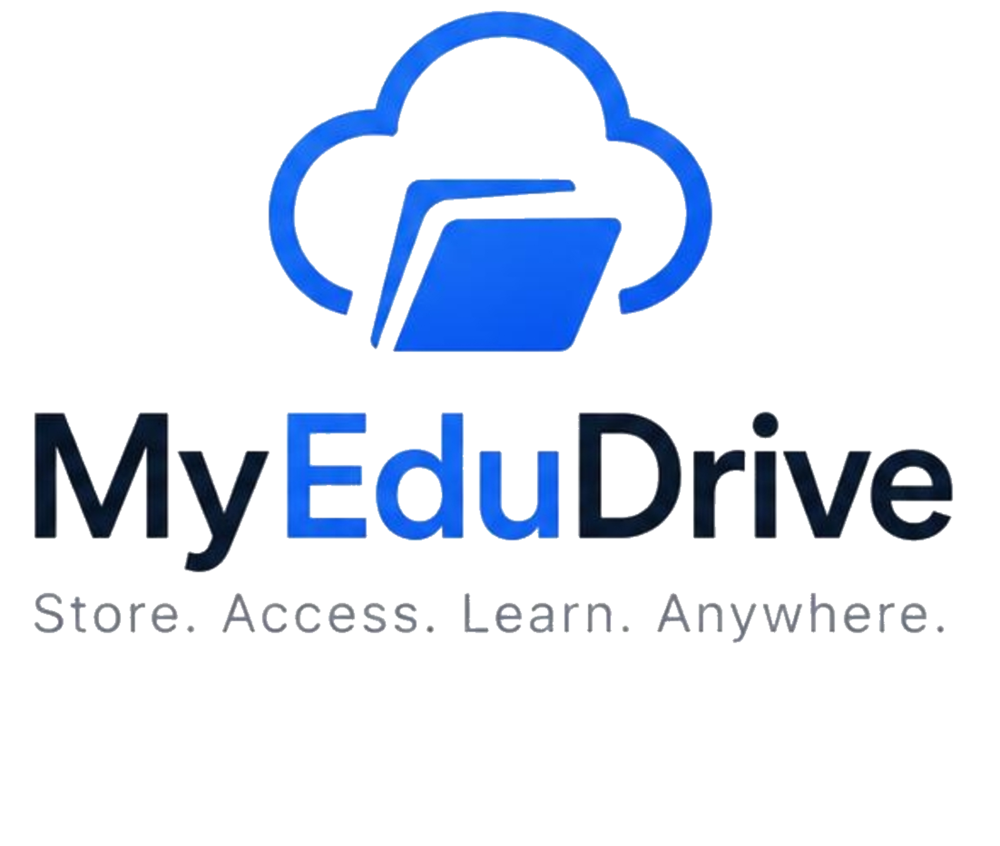
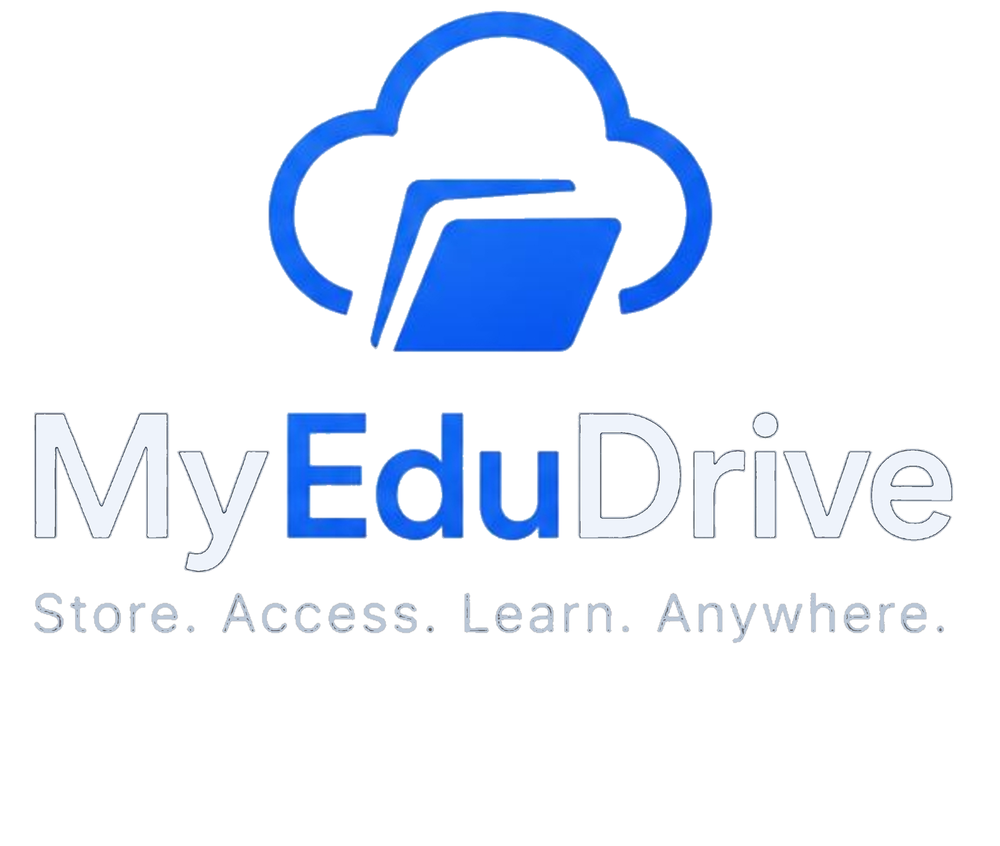

01 / ORGANIZE
Keep course files together
Create a clear home for lecture notes, reading lists, assignments, and reference materials.
A clearer space for learning
Keep class files, study resources, and shared work together in a cloud workspace made for education.
YOUR SPACE
A workspace that makes sense
Bring everyday educational files into a shared, organized space that is easy to return to.
01 / ORGANIZE
Create a clear home for lecture notes, reading lists, assignments, and reference materials.
02 / SHARE
Use your drive to share files and folders with classmates, educators, or your learning group.
03 / ACCESS
Sign in to your existing account in a browser and get to the files you need for the next class.
A familiar way to work
MyEduDrive gives your learning files a dependable place in your everyday study routine.
Open your driveOpen the existing MyEduDrive sign-in page and use your account.
Add or organize the course materials and resources you already work with.
Return to your files when you need them and share resources with your group.
For the people who make learning happen
Keep notes, assignments, and study resources close at hand.
Organize teaching materials and share useful resources with learners.
Give collaborative work and shared files a place to live.


Your next step starts here
Sign in and get back to the files that move your learning forward.
Open MyEduDrive